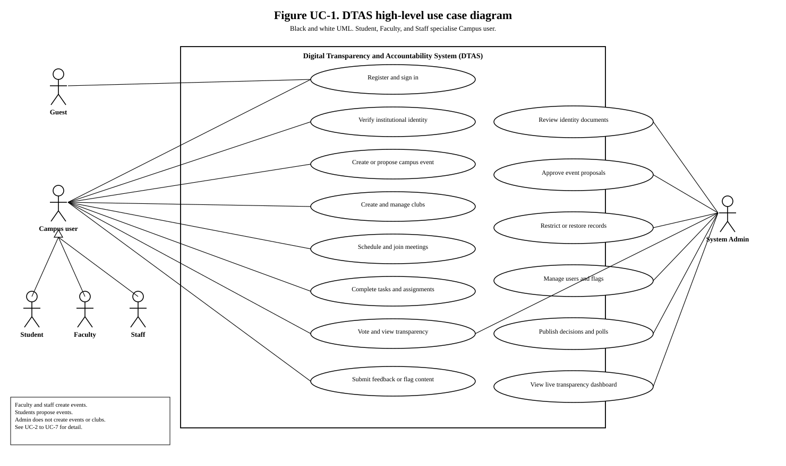
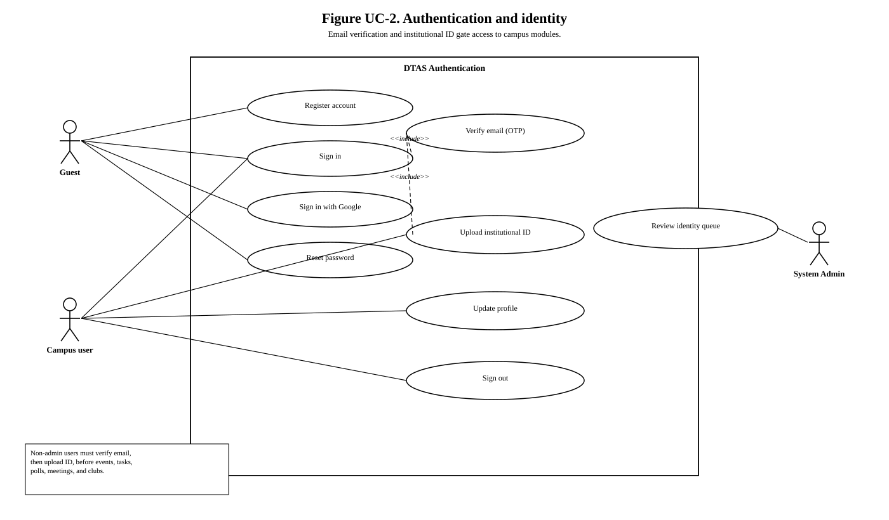
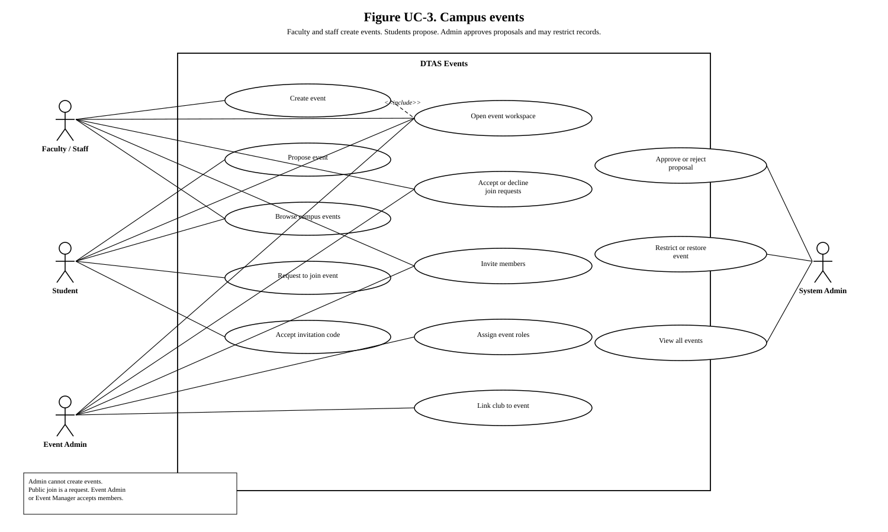
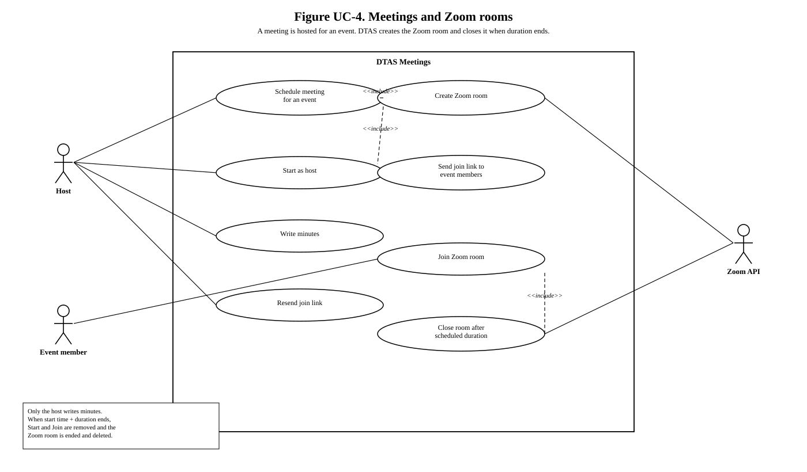
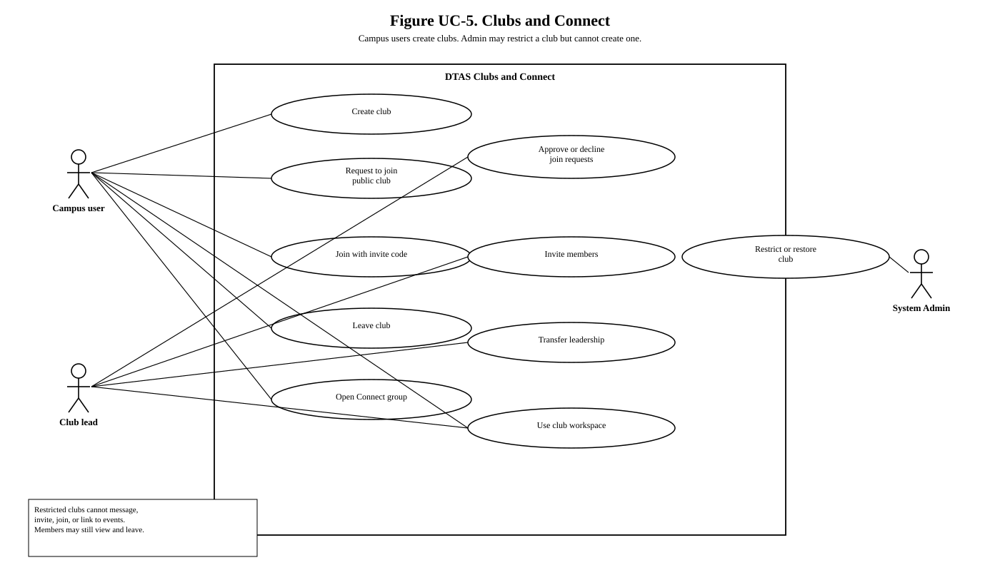
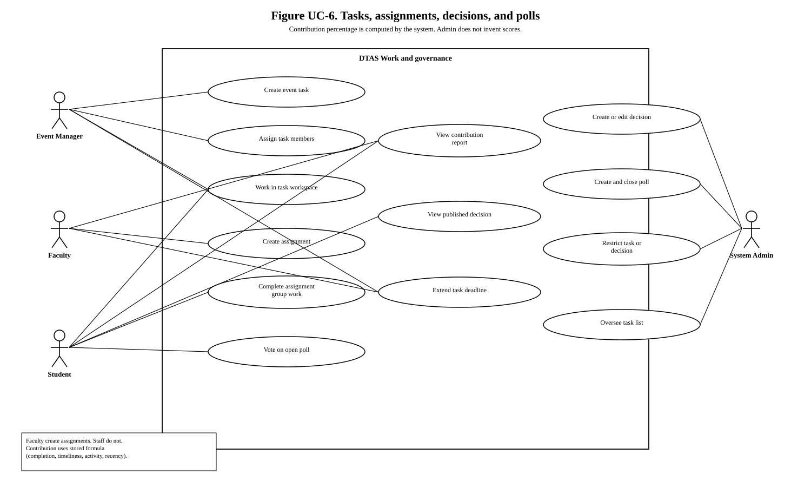
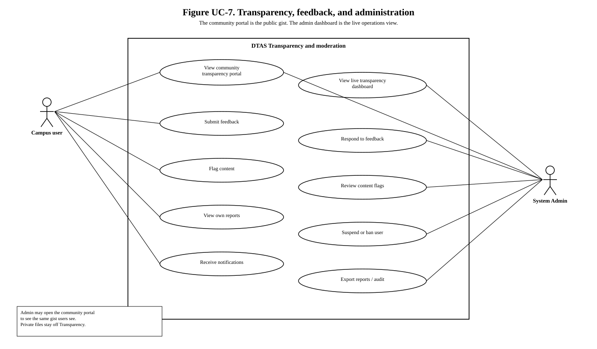

Black-and-white UML use case diagrams for the Digital Transparency and Accountability System. Open this file in a browser and print to PDF if you need a report copy.
Faculty and staff create events. Students propose events. System Admin does not create events or clubs.
Public club and event join is a request. The lead accepts or declines.
Meeting host writes minutes. The Zoom room closes when start time plus duration ends.
Contribution percentage is computed. It is not entered by hand.

Figure UC-1. High-level use cases. Student, Faculty, and Staff specialise Campus user.

Figure UC-2. Register, sign in, email OTP, and institutional ID review.

Figure UC-3. Create, propose, join, and restrict campus events.

Figure UC-4. Schedule a meeting for an event, send the Zoom join link, close the room after duration.

Figure UC-5. Clubs and Connect. Admin may restrict a club but cannot create one.

Figure UC-6. Tasks, assignments, decisions, and polls.

Figure UC-7. Community portal, live admin dashboard, feedback, and moderation.